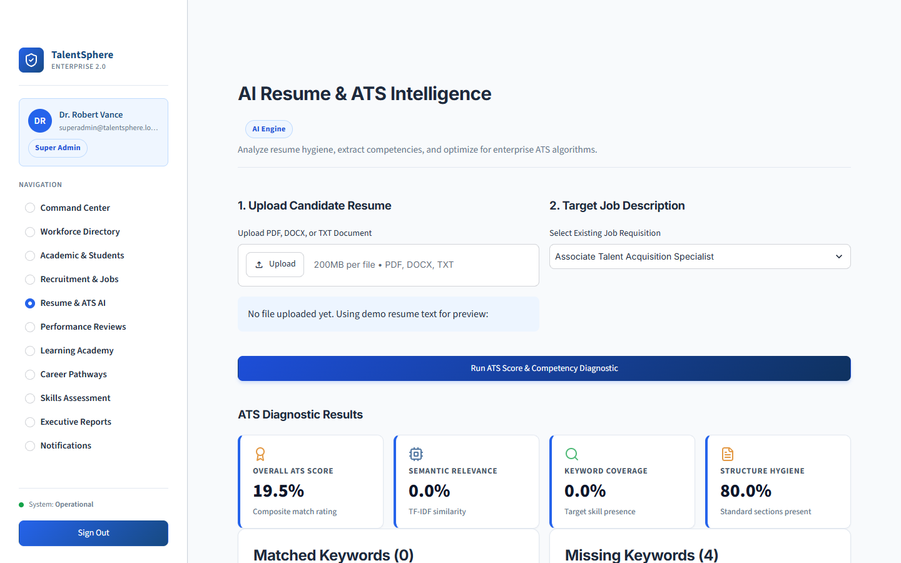
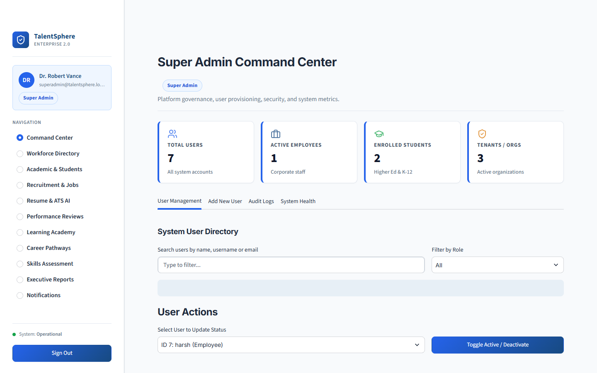
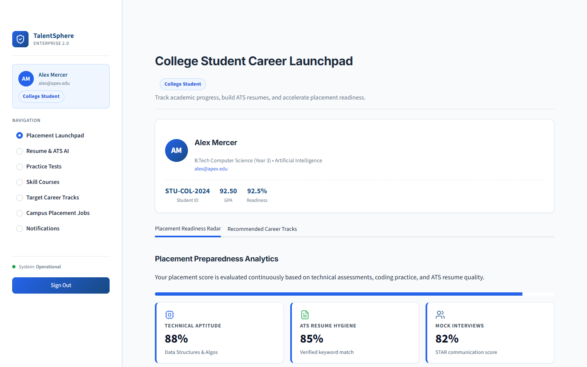
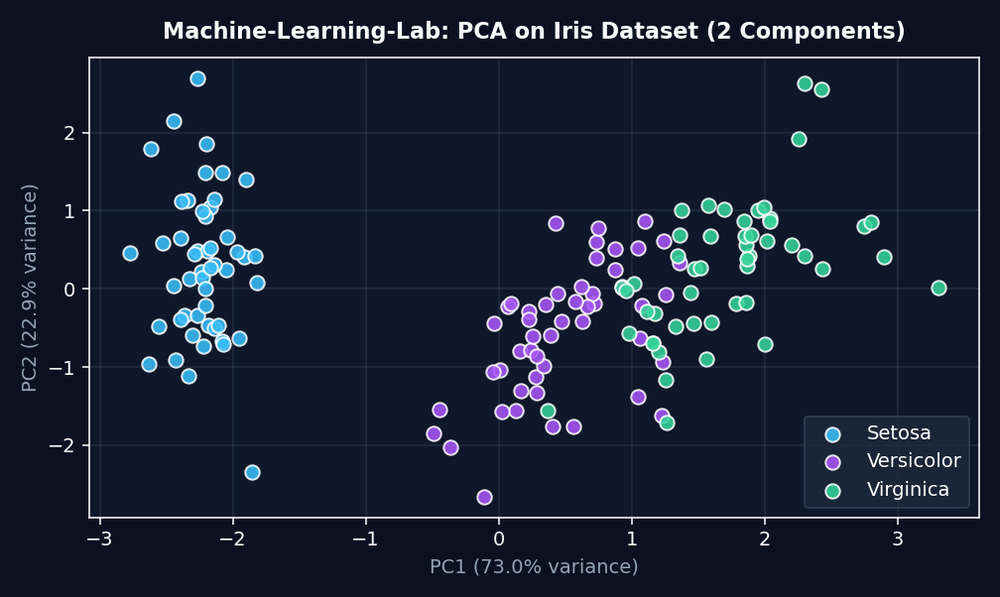
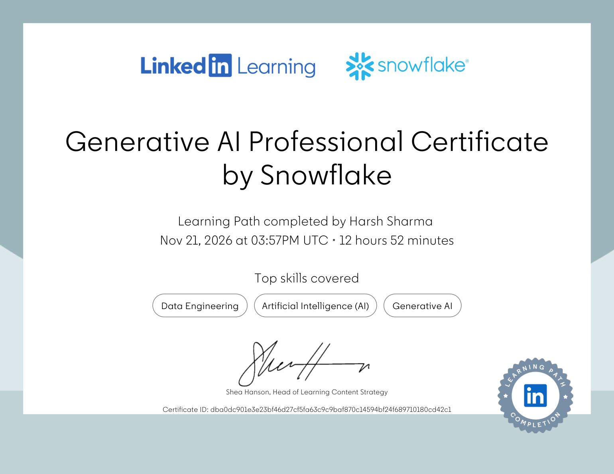
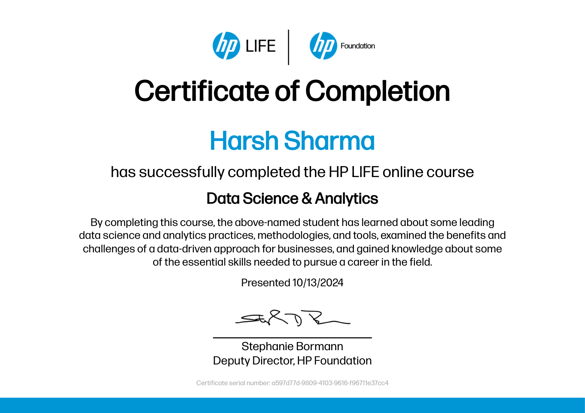
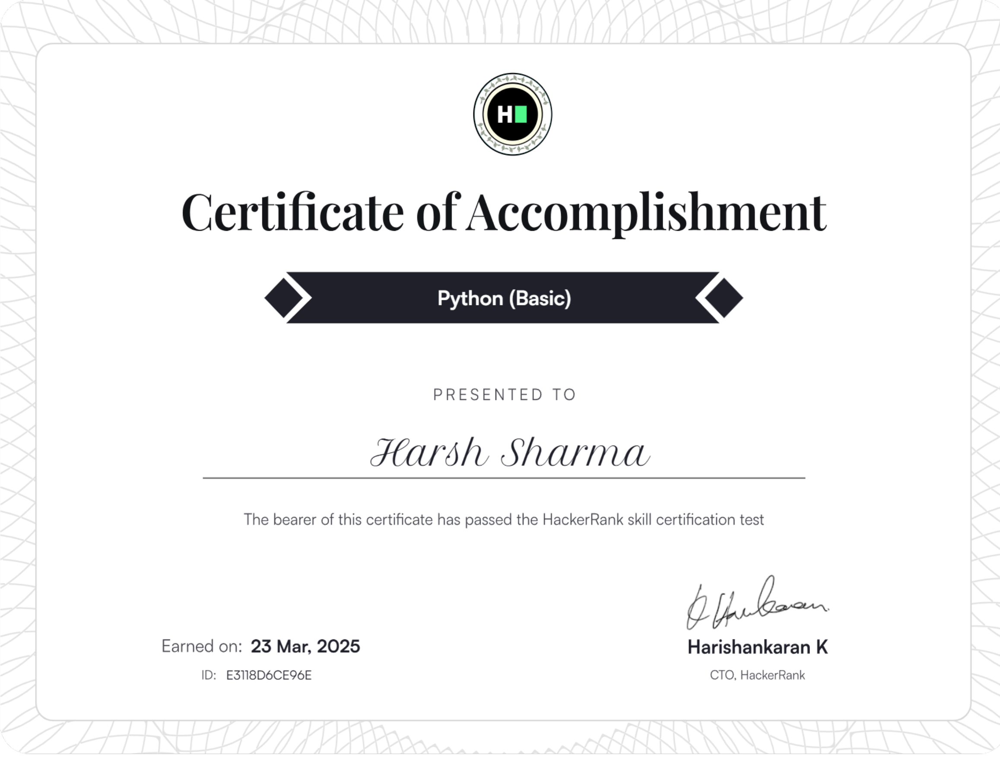
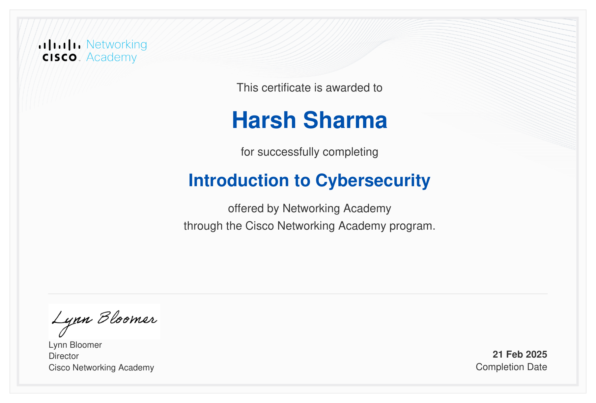
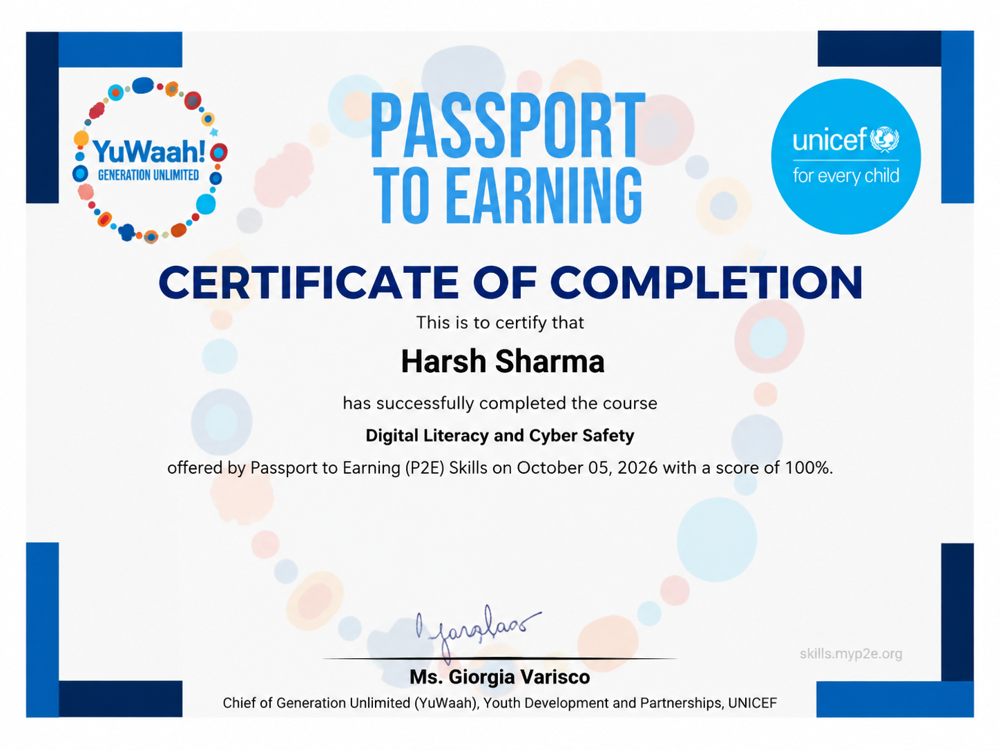

Languages
Core
Python
SQL
C / C++
HTML5 / CSS3
// B.Tech CSE (Data Science) · Lingaya's Vidyapeeth, Faridabad
I design and ship applied Generative AI (RAG), Machine Learning, and Data Analytics systems — from Whisper + LangChain + ChromaDB video intelligence to multi-tenant Streamlit + SQLAlchemy + Scikit-learn SaaS platforms.
"internship": "Data Analyst @ Aishwi Tech",
"flagship_live": "TalentSphere Enterprise 2.0",
"genai_rag": ["Whisper", "LangChain", "ChromaDB", "Mistral AI"],
"latest_cert": "Snowflake GenAI + NPTEL Elite"ABOUT ME
I am a B.Tech Computer Science (Data Science) undergraduate at Lingaya's Vidyapeeth, Faridabad (2024–2028), focused on building practical systems across Data Analytics, Machine Learning, and Generative AI.
During my 5-month Data Analyst Internship at Aishwi Technologies (Jul–Nov 2025), I worked on real-world production datasets—handling data cleaning, exploratory data analysis (EDA), visualization, and collaborative reporting workflows.
Beyond analytics, I ship end-to-end Python applications: TalentSphere Enterprise 2.0 (a deployed multi-tenant ATS & talent platform with 28 SQLAlchemy ORM models, TF-IDF matching, ReportLab PDFs, Docker, and 20 pytest tests) and AI Video Assistant (a Whisper + LangChain + ChromaDB + Mistral AI RAG pipeline).
TECHNICAL CAPABILITIES
EXPERIENCE & LEADERSHIP
Aishwi Technologies · Faridabad, India
National Service Scheme & Lingaya's Vidyapeeth
FEATURED ENGINEERING & LIVE VISUALS

🔍 Preview ScreenshotMulti-tenant AI talent management, career readiness, and ATS intelligence SaaS platform built from scratch in Python and Streamlit. Features 28 SQLAlchemy ORM models (SQLite WAL / PostgreSQL), Bcrypt 12-round auth, 6-role RBAC, Scikit-learn TF-IDF ATS scoring & job matching, ReportLab PDF exports, Docker, and 20 passing pytest tests.


Multimodal RAG web application ingesting YouTube URLs (yt-dlp) and local videos (FFmpeg), transcribing speech via OpenAI Whisper ASR, indexing chunks in ChromaDB with Hugging Face all-MiniLM-L6-v2 embeddings, and orchestrating LangChain + Mistral AI chains for map-reduce summarization, action-item extraction, and grounded Q&A.

🔍 Preview Output Plot
11 modular Scikit-learn workflows spanning Titanic imputation, Linear/Multiple Regression, PCA on Iris, Logistic Regression, KNN tuning, TF-IDF + SVM/Naive Bayes spam detection, Decision Trees, Random Forest ColumnTransformer pipelines, K-Means & Hierarchical clustering, and UCI HAR models.
9 multi-level Python scripts (Levels 1–3) analyzing restaurant ratings, geospatial coordinates, online delivery impact, pricing vs. votes, CLI cuisine/city recommendations, and a 3-panel Matplotlib sentiment dashboard.
Object-oriented Python banking application with both a Streamlit web interface and CLI workflow supporting account creation, deposits, withdrawals, PIN validation, updates, and JSON file persistence.
Automated attendance tracking system combining biometric fingerprint verification with photo capture and structured database logging to reduce manual recording errors and automate report generation.
VERIFIED CERTIFICATES & GALLERY

🔍 View Certificate
🔍 View Certificate
🔍 View Certificate
🔍 View Certificate
🔍 View CertificateJan – May 2026
Jul – Oct 2025
Jan – Jun 2025
AI & Cloud Foundations
Applied Analytics
3 Specialized Courses
6 Foundational Modules
Participant
TIMELINE
Enrolled at Lingaya's Vidyapeeth, Faridabad (2024–2028), completed HP LIFE Data Science & Analytics, and built Python & C/C++ foundations.
Earned Cisco Data Analytics Essentials & Cybersecurity, HackerRank Python (Basic), NPTEL Soft Skills, Infosys Springboard modules, and coordinated ICSsCT-2025 & Tech Fest (200+ attendees).
Completed 5-month Data Analyst Internship at Aishwi Technologies (Jul–Nov 2025), Cognifyz Python EDA tasks (Jul 2025), and NPTEL Cloud Computing.
Earned NPTEL Data Analytics with Python (Elite, Jan–May 2026) and built AI Video Assistant with Whisper, LangChain, ChromaDB, and Mistral AI.
Completed Snowflake Generative AI Professional Certificate, shipped 11 Scikit-learn ML pipelines, and deployed TalentSphere Enterprise 2.0 with 28 ORM models, TF-IDF ATS scoring, Docker, and 20 pytest tests.